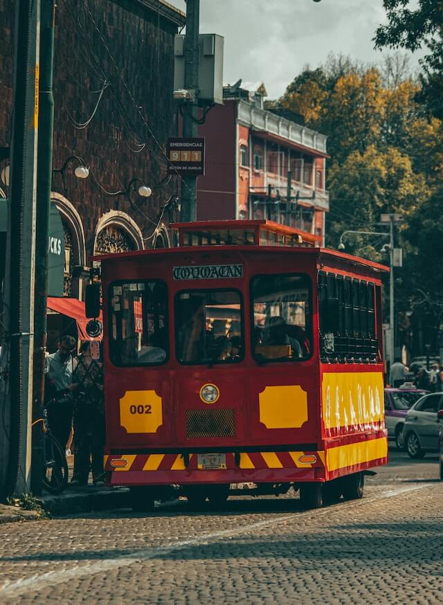

Tour 1
- Centro histórico
- Barrio de Chimalistac
- Coyoacán
- Xochimilco
Tiempo estimado de recorrido 8-10 hrs.
Tiempo estimado de recorrido 8-10 hrs.
Tiempo estimado de recorrido 8-10 hrs.
Tiempo estimado de recorrido 8-10 hrs.
Tiempo estimado de recorrido 8-10 hrs.
Ahora si lo tuyo es conocer un sitio más a fondo, caminando conocemos más.
En este circuito conoceremos como fue creada la gran Ciudad de México, desde su origen como México-Tenochtitlan, hasta como la conocemos actualmente como nuestro Centro Histórico de la CDMX. (Recorrido a pie por Templo Mayor, Catedral, Palacio Nacional, calle de Tacuba, Palacio de Bellas Artes, Alameda Central y la calle de Madero)
Tiempo estimado de recorrido 4 hrs.
La sola mención de su nombre habla por sí mismo, y sí, es uno de los sitios arqueológicos más visitados en nuestro país, tanto por su majestuosidad como por todas las preguntas que aún no se han logrado contestar sobre sus habitantes, gobernantes y su abandono, sin embargo si sabemos que fue el sitio más importante de su época para toda Mesoamérica tanto en lo político, religioso, cultural y comercial, ven con nosotros a conocer su historia y su gran arquitectura, para que, después de caminar por sus grandes edificios, visitemos alguno de sus palacios y sus museos y conozcas más cosas de la vida cotidiana de esta gran ciudad.
Tiempo estimado de recorrido 6-8 hrs.
Enclavado en el Cerro de los ídolos, se encuentra un templo monolítico único en su tipo en América y de gran importancia para el Imperio Mexica, el templo de Cuauhtinchan o Casa de las águilas. Durante este circuito, subiremos a lo alto del cerro donde podremos admirar el valle de Malinalco y conoceremos este gran templo, el cual fue elaborado desde el cerro, es decir toda la arquitectura del templo se elaboró y esculpió dentro de éste, dándole un carácter sin igual, al ver el templo enclavado en él. Posteriormente podremos visitar el museo Luis Mario Schneider para observar algunas réplicas del sitio arqueológico y bajar por algunas calles hasta el centro de Malinalco donde comeremos en alguna de sus calles para poder continuar nuestra visita hacia el convento agustino erigido en el siglo XVI y que dentro de su claustro cuenta con unos murales en grisalla fascinantes.
Tiempo estimado de recorrido 10-12 hrs.
Dentro del ex convento jesuita de San Francisco Javier, se encuentra una de las joyas del barroco que aún quedan de la época virreinal, y que vale la pena visitar por su gran belleza y fineza para trabajar este estilo. Ahí mismo se encuentra el Museo Nacional del Virreinato, el cual también conoceremos en nuestra visita para posteriormente tener un breve recorrido por el centro del lugar y comer algún platillo tradicional.
Tiempo estimado de recorrido 10-12 hrs.
Conocer esta ciudad es adentrarnos a los colores y sabores que han caracterizado a México, es rica en cultura prehispánica, como en los sabores que han dado a conocer en el mundo, algunas de sus fiestas más representativas son: "La Guelaguetza" y sus festividades del día de muertos. Sin embargo no importa la fecha que decidas visitarla, Oaxaca no pierde su folklor ningún día del año.
Y dentro de nuestro recorrido también visitaremos dos de los sitios arqueológicos más emblemáticos del estado: Monte Albán y Mitla, además de conocer la forma en que se realizan algunas artesanias que caracterizan a Oaxaca, sus tapetes de telar de cintura, su cerámica en barro negro y sus reconocidos alebrijes
Tiempo estimado de recorrido 10 - 12 hrs.
¿Te gustaría conocer la estructura piramidal más grande del mundo encontrada hasta el momento? Sí, así es, ésta se encuentra en Cholula y con 450 m por cada lado, aquí iniciamos nuestro recorrido para conocer a los pobladores de la región de Puebla, desde la época prehispánica hasta nuestra época. Recorreremos Cholula, el templo de Tonanzintla y la ciudad de Puebla, para conocer la evolución que ésta hermosa región ha tenido a lo largo de los siglos, y descubrirás ¡que Chula es Puebla!…
Tiempo estimado de recorrido 10-12 hrs.
Así es, Tlaxcala conserva en su territorio, uno de los sitios arqueológicos más interesantes del mundo prehispánico: Cacaxtla, que posee uno de los murales más impactantes y mejor conservados y el cual vale la pena conocer. Y Xochitecatl que nos deja un lugar que fue dedicado a la mujer, y se encuentra junto a Cacaxtla. Terminando nuestra visita en los sitios arqueológicos, nos trasladaremos a Tlaxcala, donde comeremos para continuar nuestro viaje por su centro y visitar el palacio de gobierno con sus murales y conoceremos uno de los templos más hermosos de la región: el convento de San Francisco.
Tiempo estimado de recorrido 10 - 12 hrs.